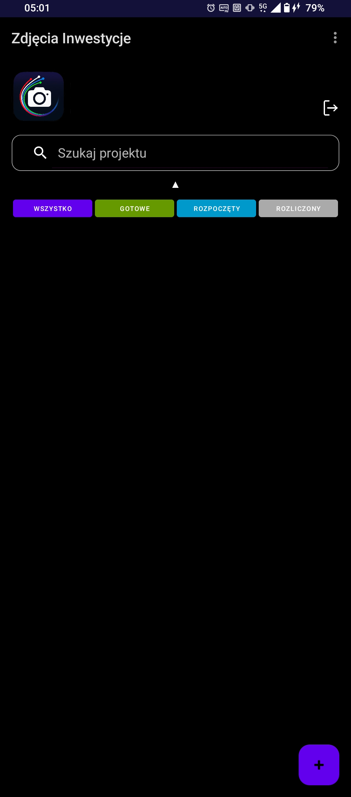

Zarządzanie dokumentacją, które eliminuje błędy w terenie i skraca czas raportowania o połowę.

System eliminuje chaos w galerii. Zdjęcie wykonane w aplikacji trafia od razu do właściwego folderu inwestycji z naniesionymi danymi GPS i datą.
Wiele ekip (A, B, C) może pracować nad tym samym zadaniem. System łączy ich pracę w jeden spójny folder na Google Drive w czasie rzeczywistym.
Kontrola kabli i osprzętu. Jednym kliknięciem generujesz raporty CSV, które są gotową podstawą do wystawienia faktury za wykonane prace.
Licencje, pytania techniczne oraz wsparcie wdrożeniowe:
Odpiszemy najszybciej jak to możliwe